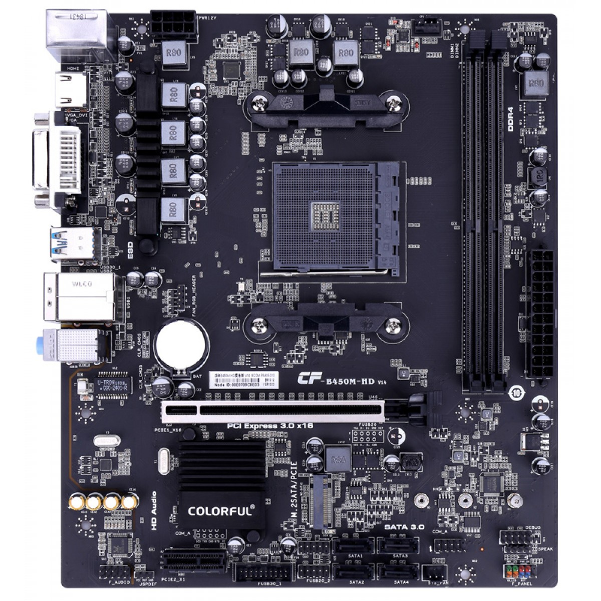
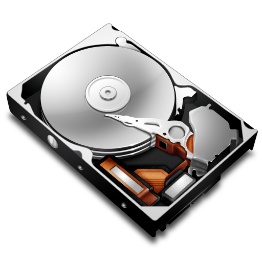
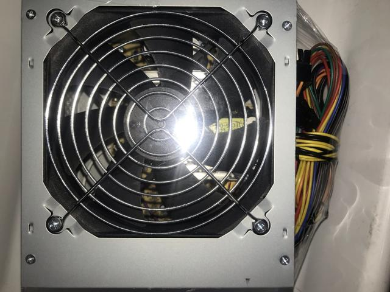
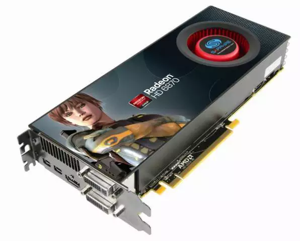
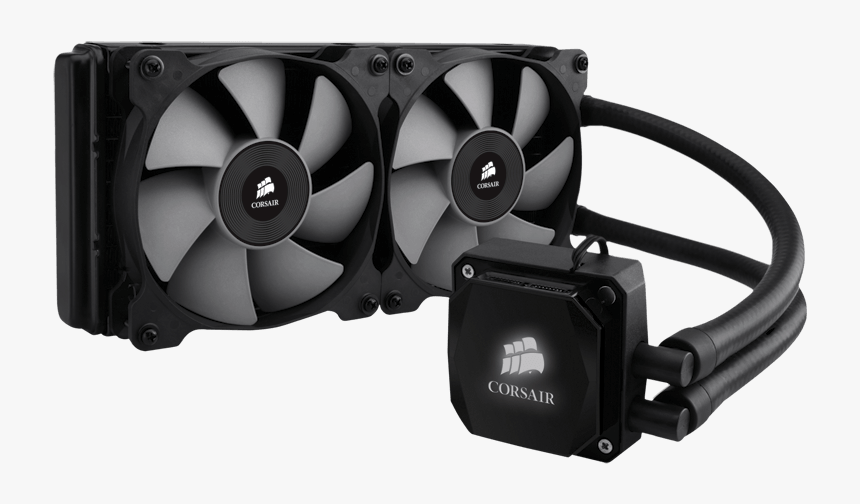
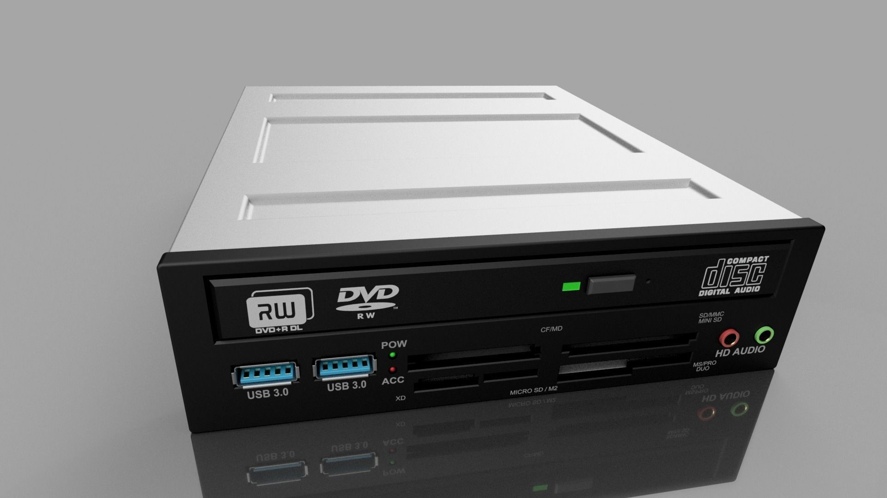
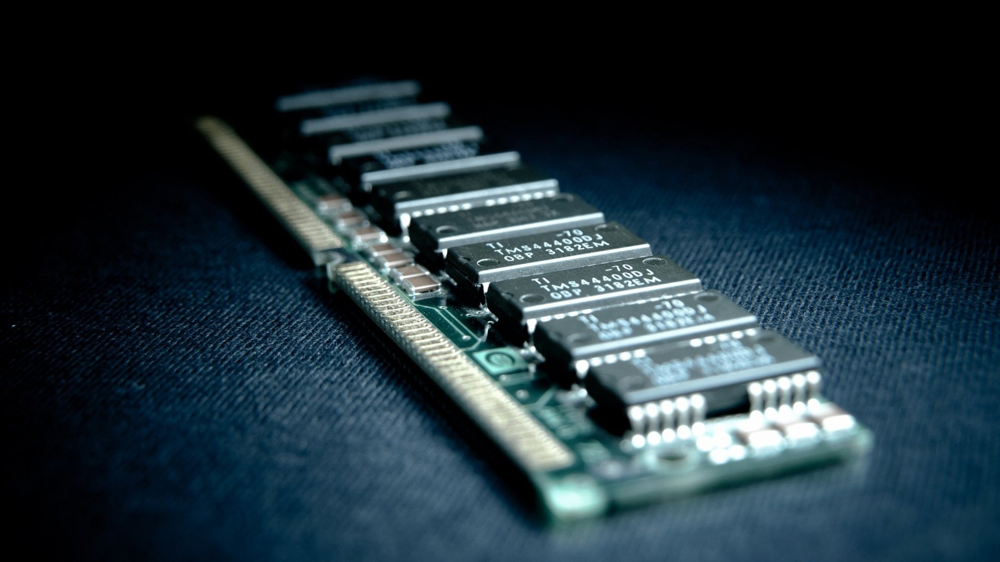
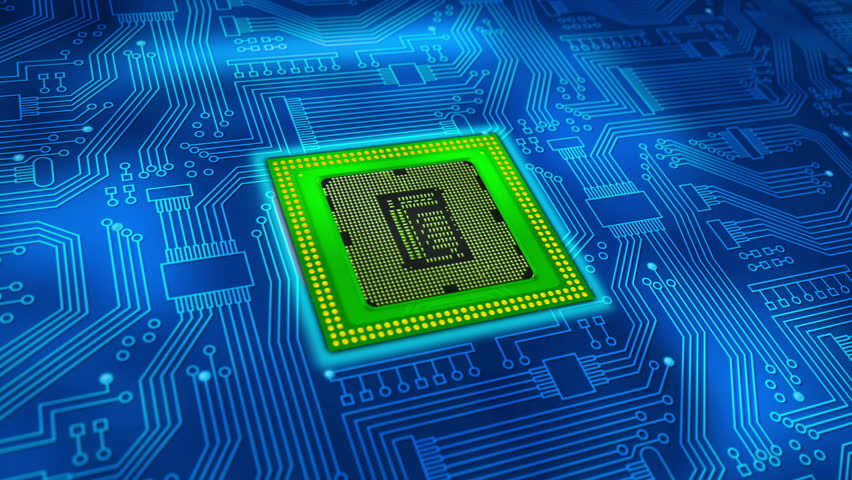

A placa-mãe nada mais é do que uma central de comunicação. É nela que são conectados todos os componentes do PC necessários para que uma máquina funcione. Os pentes de memória, a placa de vídeo, a fonte de energia, o processador, o HD, o SSD e as placas de rede, todos têm o seu lugar definido para se conectarem à placa-mãe.
A sigla HD pode referir-se a dois significados distintos: "High Definition" ou "Hard Disk". O primeiro significa "Alta Definição" e é utilizado na maioria dos casos quando se refere à qualidade de imagem de uma aparelho de TV. HDTV é uma característica presente nas mais modernas televisões que recebem sinal digital e apresentam uma qualidade de imagem de alta resolução.
A fonte de energia do computador ou, em inglês, PSU (Power Supply Unit — Unidade de Alimentação de Energia), é responsável por converter a voltagem da energia elétrica, que chega pelas tomadas, em voltagens menores, capazes de ser suportadas pelos componentes do computador.
Uma placa de vídeo é o componente do hardware do computador responsável por administrar e controlar as funções de exibição de vídeo na tela. Todo computador contemporâneo usa uma interface gráfica. A placa gráfica faz com que essa interface salte aos olhos através do LCD.
O processador realiza milhões de cálculos por segundo. A atividade interna nele só é possível graças à energia elétrica que transita de um lado para o outro. Acontece que essa grande carga de trabalho gera calor, visto que os materiais oferecem resistência à passagem de corrente. Resultado? Os processadores aquecem muito quando estão efetuando tarefas.
Dentro da informática, Drive é aquele dispositivo utilizado para fazer a leitura de algum meio externo, como, por exemplo um CD, um DVD e até mesmo um disco rígido. É um dispositivo físico, ou seja, é um hardware, e você pode visualizá-lo instalado no computador mesmo com ele desligado.
A memória RAM é um tipo de tecnologia que permite o acesso aos arquivos armazenados no computador. Diferentemente da memória do HD, a RAM não armazena conteúdos permanentemente. É responsável, no entanto, pela leitura dos conteúdos quando requeridos.
A CPU, Unidade Central de Processamento, ou simplesmente processador, é o chip principal em um computador responsável por executar todas as tarefas. É responsável por informar todos os outros componentes de um computador sobre o que fazer, de acordo com as instruções fornecidas pelos programas (softwares) em execução nesse computador.
